The Complete Photographer's Guide to Bosque del Apache
Updated June 5, 2026. Use this as a general Bosque del Apache photography guide, then adapt the dated example to your own trip. The example window is December 6-12, 2026; recheck sunrise, sunset, access, lodging, pricing, and field conditions for your own travel dates. Current logistics are verified against official or current sources as of June 3, 2026 and should be rechecked before travel.
Bosque del Apache National Wildlife Refuge is one of North America's great winter wildlife photography places because it combines spectacle with access. In a single cold morning you can photograph sandhill cranes standing in shallow water before sunrise, snow geese lifting in a white wall of wings, ducks sliding through managed wetlands, harriers quartering low over fields, cottonwoods along the Rio Grande, and desert mountains catching first light. The reason it works so well for photographers is not just that the birds are present. It is that Bosque is a managed refuge with wetlands, crop fields, auto-tour roads, viewing decks, and repeatable dawn and dusk movement.
That repeatability has a trap inside it: Bosque changes. Water levels, farming operations, roost locations, gates, closures, prescribed burns, weather, and disturbance can shift where the birds are from week to week or even day to day. Use this guide as a field system, not a fixed treasure map. The official U.S. Fish & Wildlife Service pages are the authority for access, fees, roads, hours, rules, closures, maps, and refuge operations. Current bird locations should be checked with refuge staff, recent eBird checklists, and your own scouting.
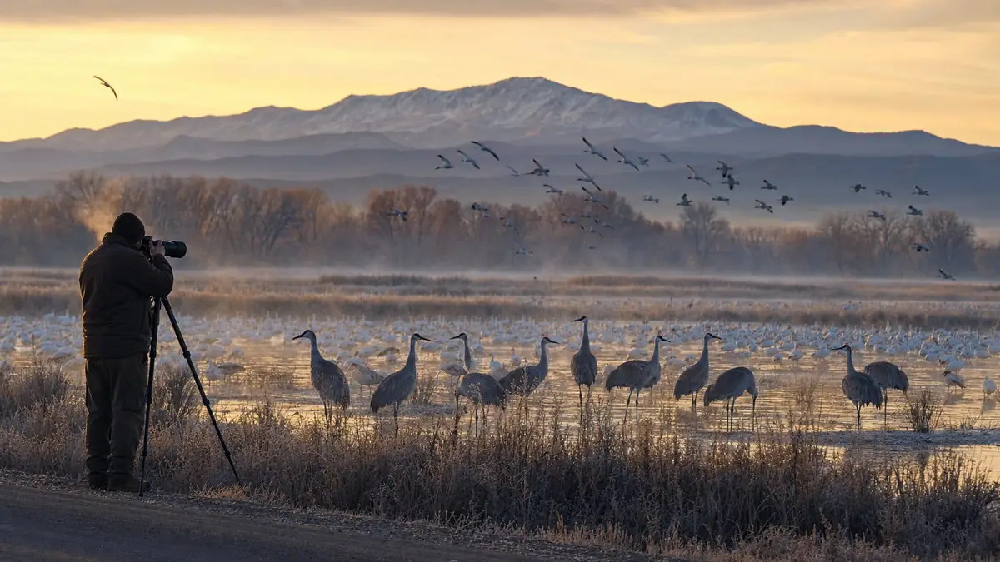
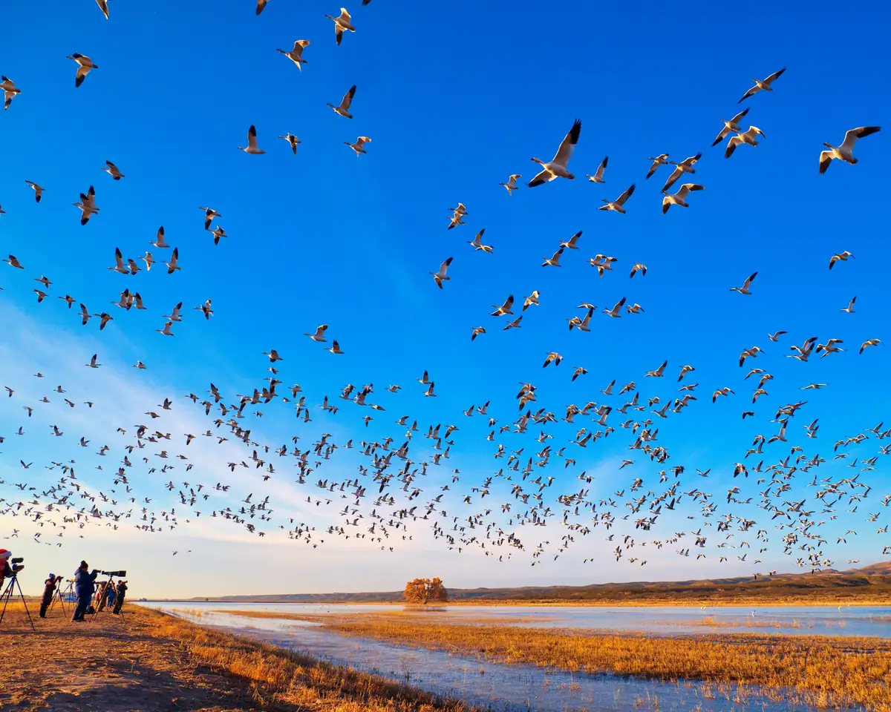
Why Bosque Works So Well For Photographers
Bosque del Apache sits along the Rio Grande in central New Mexico, south of Socorro and San Antonio. Its winter identity comes from managed wetlands and agricultural fields that support large numbers of cranes, geese, ducks, raptors, and other wildlife. FWS describes the refuge's highest bird numbers as early November through late January on its species page, which lines up with the classic winter photography season.
Photographically, the refuge gives you four things at once:
| Strength | Why it matters in the field |
|---|---|
| Predictable winter bird movement | Cranes and geese often roost in shallow water, leave near dawn to feed, then return around sunset. |
| Managed wetlands and farm fields | Water, food, and refuge management concentrate birds, but locations vary with annual operations. |
| Accessible auto-tour photography | The Auto Tour Loop is about 12 miles, with viewing areas and legal pullouts. |
| Big western light | Birds can be photographed against sunrise color, reflective water, cottonwoods, dust, frost, clouds, and mountains. |
The signature images are dawn snow-goose blast-offs and sunset crane fly-ins, but the strongest Bosque portfolios go beyond those. Look for crane family behavior, geese against mountains, ducks in textured water, raptors over fields, roadrunners near the visitor center, frosty reeds, blue-hour silhouettes, and wide environmental frames that show why this place is different from a generic bird pond.
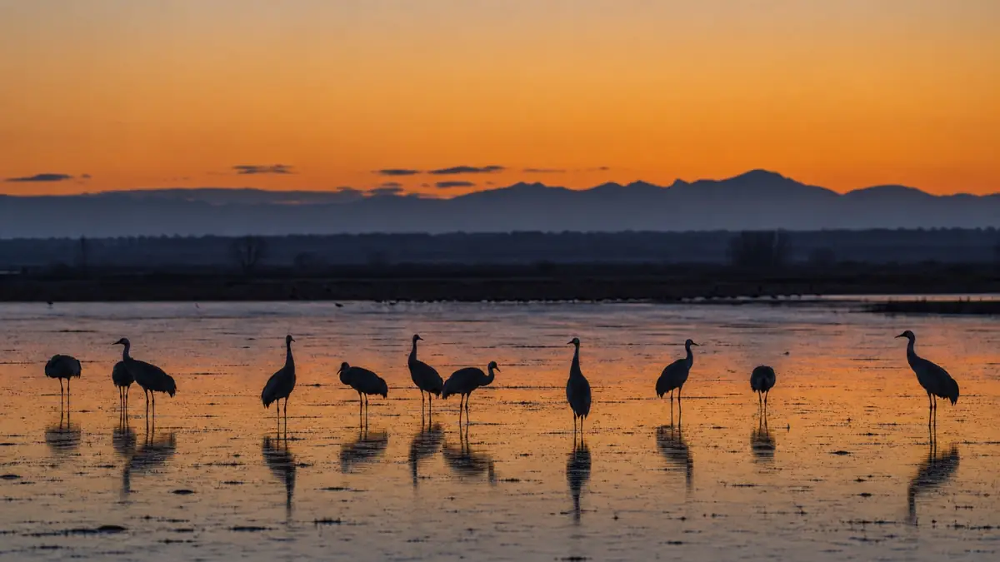
Best Time Of Year
The best overall period for a serious first trip is late November through December. The best first-time visitor month is December because bird numbers are usually strong, winter behavior is established, sunrise is not brutally early, and the probability of cranes, geese, ducks, raptors, frost, and atmosphere is good. The best month for fewer crowds is often January, especially after holiday and festival pressure, though conditions can be colder and bird concentrations may be more variable. Late October and February can be excellent for advanced photographers who are comfortable with lower predictability and more scouting.
| Period | Bird activity and photo opportunities | Weather/crowds | Best for |
|---|---|---|---|
| Late October | Arrival season. Cranes and geese may be building, ducks and migrants can be interesting, cottonwoods can still add fall color. | Milder, fewer people, less reliable mass spectacle. | Advanced photographers, scouting, landscapes, early arrivals. |
| November | Strong migration build. Cranes, geese, ducks, raptors, and fall color possibilities. Festival period can bring energy and crowds. | Cold mornings, pleasant days, increasing photographer pressure around peak events. | First-timers who want events, workshops, and classic winter birds. |
| December | Prime winter photography. Cranes and geese are usually established, ducks and raptors are active, and dawn/sunset light is excellent. | Cold starts, short days, good chance of frost or dramatic dawn conditions. Crowds vary around Festival of the Cranes and holidays. | Best overall month and best first-time choice. |
| January | Still strong winter bird season. Birds may be settled into patterns, and crowds often thin after holidays. | Coldest-feeling mornings, possible ice, wind, storms, and lower crowd pressure. | Fewer crowds, atmosphere, experienced photographers. |
| February | Winter birds begin shifting. Cranes/geese may remain but timing is more dependent on weather and migration. | Longer days, variable bird numbers, lower crowds. | Flexible advanced photographers and behavior specialists. |
| Spring | Shorebirds, waders, songbirds, migrants, fresh vegetation, and different wetland possibilities. | Less crane/goose spectacle; more heat and wind later. | Birders, species diversity, quieter refuge work. |
| Summer | Desert heat, resident birds, reptiles, insects, dramatic skies, monsoon possibilities. | Heat can be serious; dawn-only wildlife rhythm. | Local or specialist trips, not classic Bosque winter photography. |
| Fall shoulder season | Migrants build, cottonwoods turn, early cranes/geese arrive. | Variable weather and bird numbers. | Photographers who like uncertainty and lower crowds. |
Clear recommendations:
- Best overall month: December.
- Best first-time visitor month: December.
- Best peak crane/goose spectacle: late November through December, with early November through late January as the broader high-number period per FWS species guidance.
- Best fewer-crowd winter period: January or the days after major festival pressure.
- Best frost, mist, cold-weather atmosphere: December and January, especially cold clear mornings after a calm night.
- Treat cautiously: summer heat, late February if crane/goose spectacle is the only goal, and any winter trip where you cannot recheck closures, water conditions, or road status.
The Friends of Bosque del Apache Festival of the Cranes is posted for December 2-5, 2026. Cornell's event listing describes a multi-day program with photography, birding, tours, classes, and contests. That is a strong signal that early December is prime, but it also means more people. For a self-directed photography trip, the week immediately after the festival can be a smart compromise if birds remain active and lodging is easier.
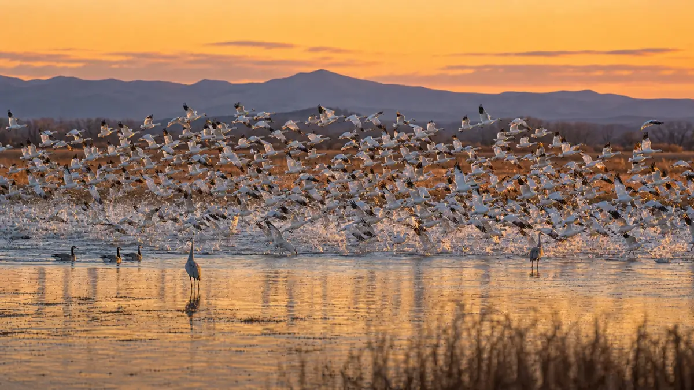
Best Time Of Day
Bosque rewards photographers who treat the day as a sequence, not a single sunrise hit.
| Time | Field strategy |
|---|---|
| Pre-dawn | Arrive 40-60 minutes before sunrise. Set exposure before action starts. Listen for cranes and geese. Do not be changing lenses during first movement. |
| Sunrise blast-off | Work wider than instinct for geese, then tighten as birds separate. For cranes, pre-frame takeoff lanes and keep room for legs, wings, and direction of travel. |
| Early morning flight | Follow birds from roosts toward feeding areas. Light improves quickly; update exposure when light changes, not every time the background changes. |
| Mid-morning feeding and wetland behavior | Scout fields, decks, and quieter wetlands. Look for cranes feeding, ducks, harriers, bald eagles, roadrunners, quail, sparrows, and environmental images. |
| Midday | Eat, warm up, download cards, clean lenses, check maps, visit the visitor center when open, and plan sunset from actual morning observations. |
| Afternoon repositioning | Start moving before the light gets good. Confirm which roosts or fields birds are using. Pick a position based on wind plus light. |
| Sunset fly-ins | Arrive early and stay late within legal refuge hours. Cranes may return in smaller groups and geese may arrive in waves. |
| Blue hour | Silhouettes, flock patterns, mountain layers, and soundscape images can continue after the obvious golden light fades. Stay within official access hours. |
Birds generally prefer to take off and land into the wind. Your best setup happens when wind direction and light direction cooperate. If the birds are landing toward you in warm light, you are in business. If the wind forces tail-on landings or bad angles, move only within legal roads, decks, and pullouts. Do not step into closed areas, fields, shoulders, railroad property, or private land for a better angle.
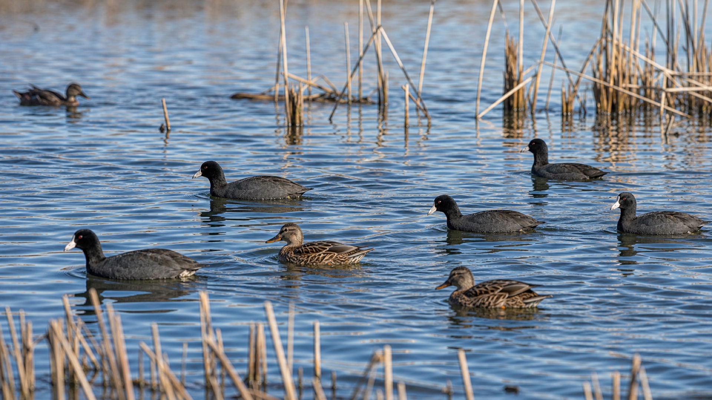
Best Places To Photograph From
Current names, access, and road conditions must be verified on the FWS Visit Us, Auto Tour, Rules, Trails, and Map pages before travel. Treat the following locations as field anchors, not promises that birds will be there on a specific day.
| Location | Best use | Focal lengths | Field notes |
|---|---|---|---|
| Scenic Drive / Auto Tour Loop | Main photography framework for the refuge: wetlands, fields, decks, flight lines, raptors, ducks, cranes, geese. | 24-105mm, 100-500mm, 200-600mm, 150-600mm, 400-800mm in good light. | Official loop is about 12 miles, with one-way signs and a two-way connector. Drive slowly, use legal turnouts, and do not block traffic. Beginner-friendly if you obey signs and scout patiently. |
| North Loop / Farm Deck area | Mid-morning feeding birds, field cranes/geese, raptors, flock movement, distant groups. | 100-500mm to 600mm+; 24-105mm for field scale. | Strong after fly-out when birds move to feeding fields. Field and gate conditions vary. Good for experienced photographers who can read distance, heat shimmer, wind, and disturbance. |
| South Loop | Wetlands, ducks, geese, coots, herons, reeds, reflections, marsh birds, slower practice after sunrise. | 100-500mm, 200-600mm, 400-800mm in good light; 24-105mm for habitat. | Dabbler Deck and Eagle Scout Deck are useful anchors. Often beginner-friendly because subjects and habitat are varied even when the main spectacle is elsewhere. |
| Flight Deck / Main Pool | Classic snow-goose blast-off, cranes, ducks, wide flock patterns, sunset returns if birds are using the pool. | 24-105mm for blast-off scale, 100-500mm or 200-600mm for individual birds. | Can be crowded. Main Pool changes with water management, so scout before committing a dawn. Good for first-timers when water and birds are present. |
| Boardwalk / Boardwalk Lagoon area | Marsh detail, ducks, waders, rails if lucky, reeds, quieter compositions. | 100-500mm, 200-600mm, macro/detail lens if carried, 24-105mm for habitat. | Best when you want slower observation and composition after the main morning action. Stay on legal paths. |
| Dabbler and Diver Deck / wetland decks | Ducks, geese, coots, herons, reflections, bright-water exposure practice. | 100-500mm, 200-600mm, 400-800mm in good light. | Shared space. Keep tripods compact and be courteous. Excellent for mid-morning or when wind makes flight work frustrating. |
| Marsh areas | Ducks, waders, shorebirds in season, harriers, backlit reeds, environmental frames. | Long zoom plus 24-105mm. | Subject distance can be deceptive. Watch edges, shadows, and behavior. Good for photographers who can make habitat images. |
| Farm fields | Feeding cranes/geese, raptors, blackbirds, dust, environmental behavior. | 400-800mm, 200-600mm, 100-500mm, 24-105mm for scale. | Vehicle as blind. Do not walk birds off food. Do not enter fields. Light shimmer can hurt long-distance sharpness after sun rises. |
| Roost pools / crane ponds along legal public pullouts | Sunrise crane departures, sunset returns, silhouettes, reflections, cold breath, geese if present. | 24-105mm, 100-500mm, 200-600mm. | Use only legal parking/pullouts. Stay off railroad property, shoulders, private land, and closed areas. Wind determines landing/takeoff direction. |
| Rio Viejo Trail area | Marsh birds, songbirds, quail, roadrunner, deer, coyote, lower-pressure walking. | 100-500mm or 200-600mm; 24-105mm for habitat. | Good mid-morning reset. Official restroom/access details should be checked on FWS pages. |
| Desert Arboretum / Visitor Center area | Roadrunner, Gambel's quail, sparrows, phoebes, desert plants, close-subject practice. | 100-400mm, 100-500mm, 24-105mm. | Use vehicle-blind behavior and slow movement. Visitor Center hours as of June 3, 2026 are Thursday-Monday, 9 AM-4 PM per FWS. |
| Nearby public roads | Possible legal views of crane ponds or fly lines. | 24-105mm to 600mm. | Only if parking is safe and legal. Do not stand in traffic lanes, on railroad property, or on private land. |
| Bernardo Wildlife Area | Optional complement, not part of Bosque. Winter cranes/geese and waterfowl may be possible. | 100-500mm, 200-600mm, 24-105mm. | Clearly separate from Bosque logistics. Use local/current sources such as Visit Socorro's Bernardo page and verify state-area access before going. |
Do not claim "Flight Deck is best" or "North Loop is best" without same-week evidence. The right question is: where did the birds roost last night, where did they feed this morning, and how will tomorrow's wind and light change the usable angle?
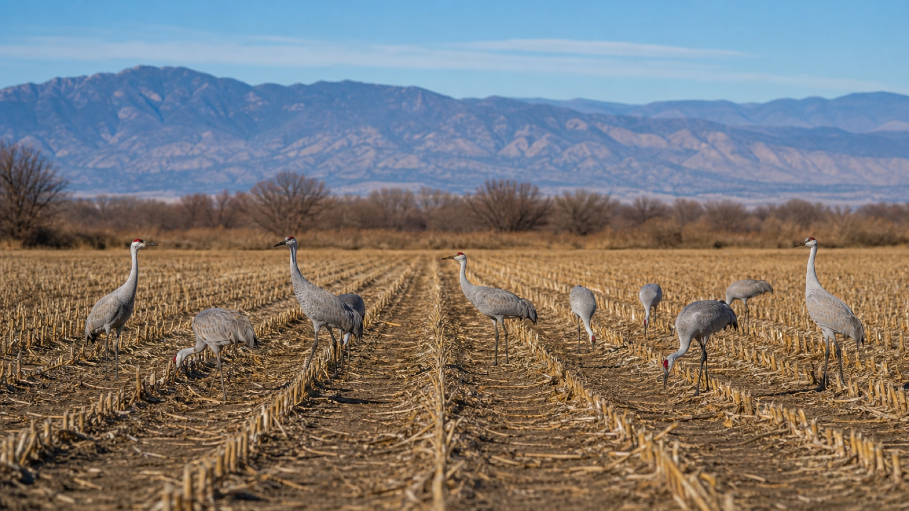
Wildlife Subjects And How To Read Them
Sandhill cranes are the emotional center of Bosque winter photography. They roost in shallow water for safety, feed in fields and wetlands, and often move in family groups or loose flocks. Look for posture changes: birds facing into the wind, calling, stretching, walking with intent, and groups tightening before movement. For takeoff, leave room in front of the bird and do not zoom so tight that the first wingbeat clips the frame. Cornell's Sandhill Crane life history is useful background for behavior, habitat, and family groups.
Snow geese are different. A single goose is beautiful, but the flock is the event. They can rise suddenly in dense waves, often triggered by group tension or perceived threat. Your job is to decide before it happens whether the image is a wide white storm, a mid-range pattern, or a tight bird-in-flight shot. White feathers blow out easily in sun, so protect highlights. Cornell's Snow Goose life history helps with flocking and feeding context.
Ross's geese may mix with snow geese. Treat them as an identification and storytelling bonus unless you have a clear species-comparison opportunity. Cornell's Ross's Goose page helps distinguish the smaller, stubbier goose from Snow Goose.
Ducks and waterfowl add variety when the cranes and geese are distant or the sunrise fizzles. Look for northern pintail, mallard/Mexican Duck types, shovelers, teal, gadwall, wigeon, coots, grebes, and mixed wetland behavior. Ducks are excellent for exposure practice because water changes from black to silver to blue within minutes.
Raptors are part of the winter field rhythm: northern harriers low over marshes and fields, red-tailed hawks, bald eagles, falcons, and owls where appropriate. Harriers often hunt by quartering low, so pre-focus on a clean background and wait for banking turns. Cornell's Northern Harrier page supports that behavior.
Roadrunners, Gambel's quail, sparrows, phoebes, blackbirds, herons, egrets, shorebirds in season, deer, coyote, and other mammals are not backups. They are what keep the day alive after the blast-off. Landscape subjects include cottonwoods, wetlands, mountains, desert plants, frost, mist, dust, storm light, blue-hour color, and the graphic shape of birds against sky.
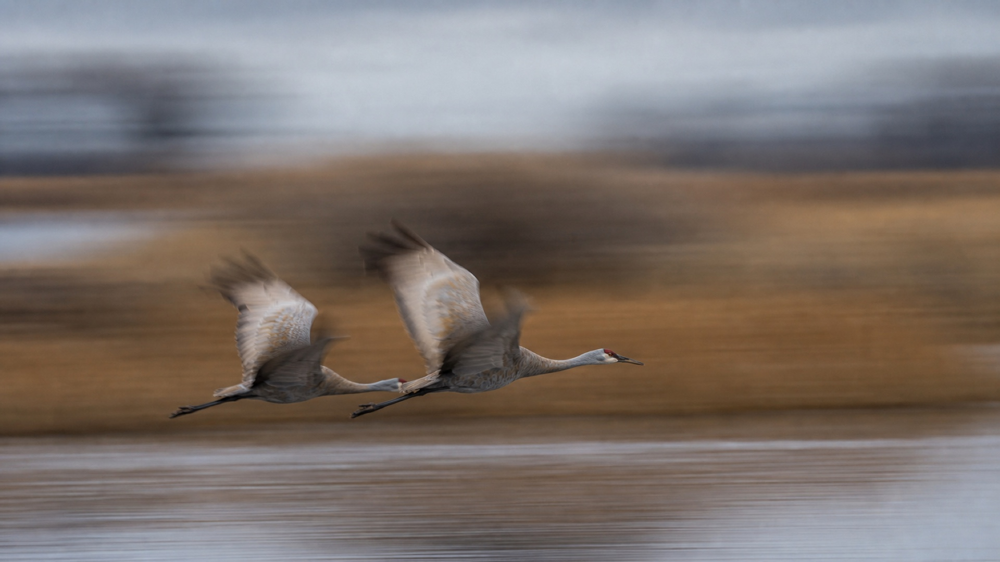
Field-Tested Photography Techniques
Flight photography starts before the bird enters the frame. Set continuous autofocus, subject detection if your camera handles birds reliably, high-speed burst, and a shutter speed fast enough for the image you want. Start slightly wider than maximum reach during chaotic action. Once you have the bird tracked, zoom or crop tighter.
For blast-offs, decide between three compositions: wide flock shape, medium chaos, or tight individuals. Do not try to make all three at once. Wide frames often need 24-105mm or 70-200mm. Medium and tight frames need 100-500mm or 200-600mm. The classic mistake is being at 600mm when the whole sky erupts.
For crane fly-ins and landings, watch wind. Cranes usually drop legs before landing and may glide, flare, or run. Pick a landing lane, pre-frame it, and wait. A quartering angle is often better than straight-on because it shows wings, legs, and body shape.
Manual exposure is often the cleanest approach for dawn and sunset flight because the light on the bird may be stable while the background changes from water to reeds to sky to mountains. Aperture priority can work if you are quick with exposure compensation. Shutter priority can be useful for panning drills or deliberate blur, but watch aperture limits in low light. Auto ISO is powerful if you know its ceiling and if your camera lets you protect shutter speed.
For white birds in sun, expose for feather detail. Use the histogram and highlight warnings after the first burst in each new light situation. Snow geese against dark reeds can trick the meter into overexposure. Start at -1/3 to -1 stop exposure compensation in aperture priority if highlights blink, or set manual exposure from a test frame and leave it alone until light changes.
Autofocus starting point: continuous AF, bird subject detection on if reliable, a medium zone or wide tracking area for flocks, and a smaller zone for individual cranes. Eye AF is a bonus, not a plan; bodies and wings matter more than a tiny eye during chaotic dawn flight. Tracking sensitivity should avoid jumping instantly to every crossing bird unless your camera and skill can handle it. Use short bursts. Hold the shutter through the peak, not through the whole morning.
Support depends on position. Handheld is best for quick acquisition with 100-400mm/100-500mm class lenses. A gimbal helps with long sessions on 200-600mm, 400-800mm, 500mm, or 600mm lenses. A monopod is useful on decks and crowded pullouts. A beanbag is excellent from a vehicle window. A tripod/ball head is better for landscapes, reflections, and locked compositions than for chaotic flight with a heavy super-telephoto.
To make distinctive images, stop chasing only full-frame birds. Work silhouettes, backlit wings, flocks against mountains, reflections, small birds in large habitat, slow-shutter abstractions, dust, frost, weather, and the human scale of photographers under birds when ethically and tastefully framed.
Low angles can make water, reflections, and silhouettes stronger, but only use them from legal decks, trails, pullouts, and open public positions. Do not leave roads, enter closed areas, step into managed fields, or crawl toward birds to lower the camera.
Starting Settings
These are starting points, not rules. Tune for your camera, lens, distance, light, wind, and keeper-rate goals.
| Scenario | Starting settings |
|---|---|
| Pre-dawn silhouettes | Manual, 1/500-1/1000 sec, f/4-f/6.3, Auto ISO or ISO 1600-6400, expose for sky color, WB daylight/cloudy or fixed Kelvin. |
| Sunrise snow-goose blast-off | 1/1600-1/3200 sec, f/5.6-f/8, Auto ISO, continuous AF, wide/zone tracking, start 24-105mm or 100-500mm before going tight. |
| Sandhill cranes in flight | 1/1600-1/2500 sec, f/5.6-f/8, continuous AF, medium zone, leave space for wings and direction. |
| Snow geese in sun | 1/2000-1/3200 sec, f/7.1-f/9, ISO as needed, protect highlights, check blinkies often. |
| Backlit birds | Manual exposure from bright background, 1/1000-1/2500 sec depending motion, consider silhouettes or rim light intentionally. |
| Slow-shutter flock blur | 1/15-1/125 sec, f/8-f/16 as needed, ISO low, pan smoothly, expect low keeper rate. |
| Stationary portraits | 1/500-1/1000 sec, f/5.6-f/8, single point or small zone, eye/subject detect if reliable, stabilize. |
| Environmental wide shots | 1/250-1/1000 sec depending bird motion, f/5.6-f/11, 24-105mm, compose water, sky, mountains, and flock shape. |
| Sunset fly-ins | 1/1000-1/2500 sec for action, slower for silhouettes, manual exposure, fixed WB, be ready to widen. |
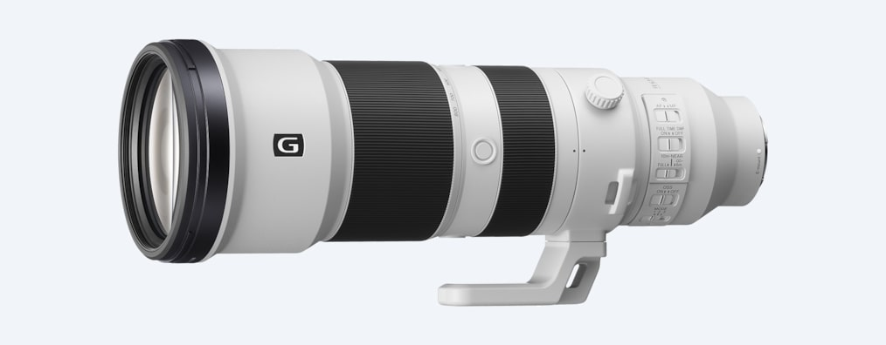
Best Equipment To Take
Minimum viable kit: one capable camera body, a 100-400mm/100-500mm/150-600mm/200-600mm class lens, a wide-to-standard zoom such as 24-105mm, extra batteries, plenty of cards, lens cloths, warm gloves, headlamp, binoculars, water, snacks, and a way to support the long lens from the vehicle.
Ideal serious wildlife kit: two bodies, one wide/standard zoom mounted on one body, one flexible long zoom mounted on the other, optional longer reach lens for good light, beanbag, monopod or gimbal/tripod, rain/dust cover, remote release, extra batteries kept warm, multiple fast cards, portable power, binoculars, lens cloths, blower, sensor-cleaning supplies, and a phone loaded with weather, wind, sunrise/sunset, eBird, and offline map tools.
Landscape plus wildlife kit: 16-35mm or 20-40mm if you love wide landscapes, 24-105mm as the primary environmental lens, 70-200mm for compression if space allows, plus the main long wildlife zoom. Do not overpack every telephoto if it slows your response or forces lens changes in dust and cold.
Lens guidance:
- 100-400mm / 100-500mm: best flexible flight and close-pass range. Excellent for first light, vehicle work, and sudden distance changes.
- 150-600mm / 200-600mm: strong primary wildlife choice, especially for cranes, geese, ducks, raptors, and fields.
- 300mm / 400mm primes: excellent handling and image quality if you accept framing limits. Add teleconverters only when light and AF support it.
- 500mm / 600mm primes: powerful but heavy. Best with gimbal/tripod discipline and experienced long-lens handling.
- 400-800mm / 200-800mm zooms: useful for distant fields, decks, perched raptors, and good-light reach. Less ideal as the only dawn/blast-off lens because they can be too tight and slow.
- Teleconverters: useful in good light for static or distant subjects. Avoid as a default before sunrise.
Mirrorless bodies with modern bird detection, high frame rates, good high ISO, and blackout-free viewfinders have real advantages. DSLRs remain viable if you know their AF system and expose carefully. Full-frame gives cleaner high ISO and wider environmental options; crop sensors give useful reach and can be excellent at Bosque. The decisive factor is whether you can acquire, track, expose, and compose quickly.
Clothing And Comfort
Bosque mornings can feel much colder than the afternoon. Plan for cold pre-dawn starts, wind, dust, sun, and long waits. Wear layers: base layer, insulating midlayer, wind shell or puffy, warm hat, neck gaiter, and gloves thin enough to operate camera controls. Bring hand warmers and keep spare batteries warm in an inner pocket. Use sturdy footwear for gravel, mud, cold decks, and short walks. Bring sunscreen, sunglasses, lip balm, water, snacks, and a thermos if that helps you stay patient.
Vehicle logistics matter. Keep one bag reachable, not buried. Pre-mount plates, straps, lens hoods, and rain covers the night before. Put a microfiber cloth in a pocket, not at the bottom of the bag. Carry food and water because loop services are limited. Do not count on hotel breakfast before a dawn departure.
Weather, Light, And Environmental Conditions
Cold mornings can delay or concentrate bird movement. Frost, ice, and visible breath make quiet crane images more powerful, but they also drain batteries and stiffen fingers. Mist or steam from wetlands, when present, is best photographed with backlight or side light. Clear skies give clean color but can become harsh fast. High clouds are excellent because they hold color longer and soften contrast. Overcast days reduce spectacle but help with ducks, portraits, behavior, and subtle landscapes.
Wind is a compositional tool. Birds take off and land into it, so use wind direction to choose which side of a pool, deck, or legal pullout gives faces, wings, and landing angles. Strong sun demands highlight discipline on snow geese. Dust can add drama at sunset but punishes lens changes. Snow or winter storms can create rare atmosphere, but check NWS forecasts, NM Roads, and official refuge updates before driving. In warmer seasons, heat shimmer and desert dryness argue for very early and late work.
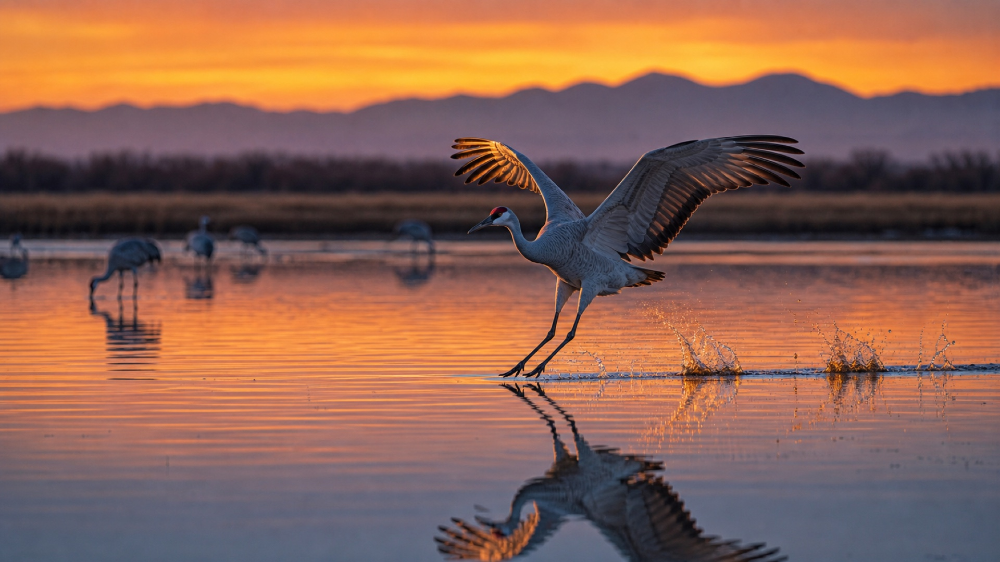
Field Strategy And Itineraries
One-day plan: arrive before dawn at the currently strongest roost, not the most famous deck. Shoot sunrise until movement fades. Drive the loop slowly after fly-out, noting feeding fields, wetland activity, raptors, and where photographers are gathering. Visit the visitor center when open for staff intel. Eat and rest midday. Return to the best roost or staging area 60-90 minutes before sunset. Review images after dinner and write down tomorrow's wind/light plan.
Two-day plan: use Day 1 for broad scouting and one classic sunrise/sunset attempt. Use Day 2 to repeat the most active roost with better positioning. If Day 1 was geese at Flight Deck, make Day 2 crane-focused at a legal crane-pool pullout, or vice versa.
Three-day plan: Day 1 learn the loop and identify roosts. Day 2 optimize for the strongest dawn and scout fields mid-morning. Day 3 make a deliberate portfolio: one wide spectacle, one crane behavior sequence, one duck/wetland set, one raptor or road runner, one landscape/atmosphere image.
Five-day serious plan:
| Day | Dawn | Mid-morning | Sunset |
|---|---|---|---|
| 1 | Best current crane-pool or Flight Deck intel | Full loop scout, visitor center if open | Repeat strongest roost from morning observations |
| 2 | Alternate roost/species from Day 1 | North Loop/Farm Deck fields and raptors | Flight Deck or crane pools based on bird return |
| 3 | Best confirmed roost with improved position | South Loop wetlands, decks, ducks, exposure practice | Wide sunset flock and reflection work |
| 4 | Weather-dependent creative morning: mist, frost, silhouettes, or backlight | Rio Viejo, Boardwalk, Desert Arboretum, smaller subjects | Crane fly-in with preselected landing lane |
| 5 | Highest-yield repeat, no novelty for novelty's sake | Fill portfolio gaps and rest | Final best-light session at the week's proven location |
Avoid wasting time by reviewing images only after the peak action, moving before good light rather than during it, and repeating productive locations when conditions line up. Bosque rewards iteration.
Scouting Strategy
Scout like a wildlife photographer, not like a tourist chasing pins. Check official refuge updates before leaving home. On arrival, ask refuge staff where cranes and geese have been roosting and feeding, which roads or gates have changed, and whether water, burns, closures, or maintenance affect the loop.
Use recent eBird checklists for pattern detection: which hotspot, what date, what species, and whether the report mentions numbers, behavior, or location detail. Useful starting links include North Loop, South Loop, and Macaulay Library location/media search. The Birding Hub's Bosque page exposed eBird-powered recent observations on June 3, 2026, which is helpful as a signal, but treat any third-party current feed as supplemental.
Drive the loop slowly. Mark where birds are at dawn, where they go after fly-out, what direction they fly, where they return at sunset, and how wind changes landings. Talk with other photographers, but do not blindly follow the biggest group. Sometimes the crowd is at the famous place while the better angle is 200 yards away at a legal pullout.
Ethics, Rules, And Responsible Photography
This section is grounded first in official FWS rules. As of June 3, 2026, the FWS Rules and Policies page is the authority for Bosque. Key field implications:
- Stay on legal roads, trails, viewing decks, and designated turnouts.
- Respect closed areas, gates, one-way signs, maintenance areas, and posted restrictions.
- No drones.
- No off-road driving.
- No camping or overnight parking.
- Do not feed, bait, flush, chase, crowd, or harass wildlife.
- Do not use artificial light to spot, locate, or take wildlife.
- Park without blocking roads, gates, turnouts, or traffic.
- Follow posted speed limits and road-surface cautions; project notes from the FWS Auto Tour page record a 25 mph maximum, with some sections posted at 10 mph.
- Leave no trash and respect refuge staff, volunteers, and other visitors.
Audubon's ethical bird photography guide is a useful supplement: the welfare of the bird comes before the image. At Bosque, that means using the vehicle as a blind, letting birds feed and rest, keeping your distance, and accepting that some angles are not legally or ethically available.
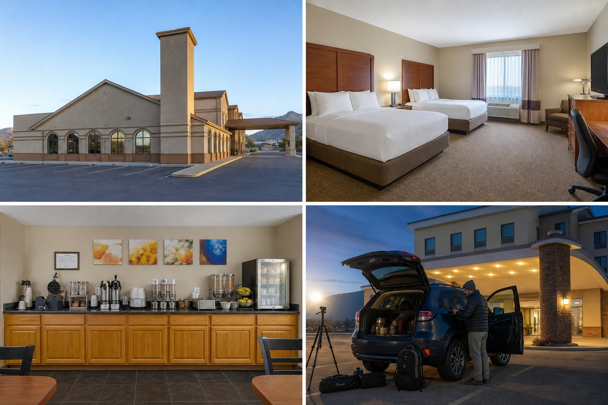
Logistics
Bosque del Apache is reached from the Socorro/San Antonio area in central New Mexico. Albuquerque International Sunport is the practical major airport for many travelers; verify current flights and rental cars through ABQ Sunport and the rental-car page.
As of the June 3, 2026 FWS check, the refuge address is 1001 State Highway 1, San Antonio, NM 87832; the Visitor Center coordinates listed in project notes are 33.804777, -106.890917. FWS lists refuge lands, the tour loop, wilderness, and trails as open daily from one hour before sunrise to one hour after sunset. Visitor Center and Friends Nature Store hours are listed as Thursday through Monday, 9 AM to 4 PM. The private vehicle entrance fee is listed as $5, and there is no ATM on the refuge. Flush toilets are adjacent to the visitor center and listed as open 8 AM-4 PM; vault toilets are listed at Flight Deck and Rio Viejo/Bike Trails when the loop is open. Potable water should not be assumed on the loop.
Socorro is the practical photography-first lodging base because it has more hotels, food, fuel, and a reasonable pre-dawn drive. San Antonio is closer but has smaller lodging inventory. For Dec. 6-12, 2026, the main lodging candidates are Comfort Inn & Suites Socorro, Best Western Socorro Hotel & Suites, Holiday Inn Express Socorro, Econo Lodge Inn & Suites, and Casa Blanca B&B, with all rates requiring final direct recheck. Los Lunas is a Marriott Bonvoy tradeoff, not a dawn-photography base. If accessibility matters, verify current trail, deck, restroom, parking, and room-access details directly before booking.
Food and fuel are straightforward in Socorro, more limited in San Antonio, and should be checked for post-sunset hours. Cell service can vary by carrier and exact location; download maps and key pages offline. Most auto-tour photography does not require high clearance in normal conditions, but road status, mud, snow, and closures can change the answer. Check official sources before assuming access.
Best trip length: three days is the minimum for serious photography; five days is much better because it lets you learn patterns, repeat productive spots, and survive a bad-weather morning.
Common Mistakes
Arriving too late. Ignoring wind. Standing in pretty light but with birds landing away from you. Accidentally using 1/250 sec when you meant 1/2500 sec. Blowing highlights on snow geese. Overusing 600mm when the better frame is 100mm. Ignoring habitat. Leaving after sunrise before feeding behavior begins. Following crowds blindly. Dressing for the afternoon instead of the pre-dawn wind. Forgetting to check official refuge updates. Blocking roads or crowding birds. Reviewing the back of the camera during peak action. Running out of card space or batteries. Waiting until the trip to practice flight tracking.
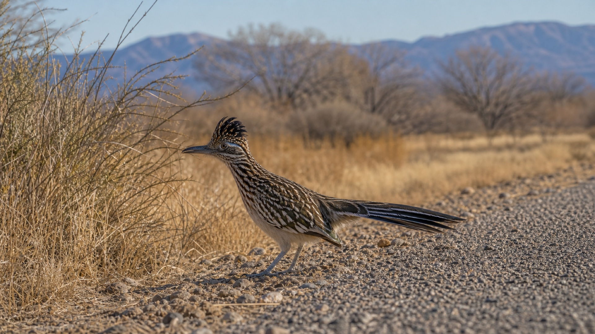
Shot List
- Snow goose blast-off, wide and medium.
- Crane silhouettes before sunrise.
- Cranes landing with legs down.
- Cranes bugling, stretching, dancing, or interacting.
- Crane pairs and family groups.
- Geese against sunrise color.
- Birds crossing mountain bands.
- Reflections in calm water.
- Environmental portraits with habitat.
- Motion-blur flock abstractions.
- Backlit wings and rim-lit cranes.
- Wide-angle wetland, field, and desert habitat scenes.
- Raptors hunting over fields or marsh.
- Roadrunner portrait near roads/visitor-center habitat.
- Cottonwoods in fall if visiting before winter peak.
- Abstract flock patterns.
- Frost, mist, dust, snow, storm, or cold-breath atmosphere.
Quick Reference Checklist
Best months: December for first-time serious photographers; late November through December for peak spectacle; January for lower crowd pressure and cold atmosphere; late October and February for flexible advanced scouting.
Best daily schedule: arrive 40-60 minutes before sunrise; shoot blast-off and early flight; scout fields and wetlands mid-morning; rest/download/eat midday; reposition 60-90 minutes before sunset; stay through blue hour within legal access.
Essential gear: camera body, flexible long zoom, 24-105mm or equivalent, extra batteries/cards, beanbag, lens cloths, binoculars, headlamp, gloves, hand warmers, water, snacks, downloaded maps.
Starting camera settings: 1/1600-1/3200 sec for flight, f/5.6-f/8, Auto ISO or manual ISO as tested, continuous AF, bird detection if reliable, medium/wide zone for flight, histogram/highlight warnings on, raw capture.
Clothing: layered cold-weather kit, wind shell, warm hat, camera-friendly gloves, sun protection, sturdy footwear, hand warmers, dust protection, water and food.
Scouting: ask staff, check official updates, review recent eBird checklists, drive the loop slowly, identify roosts and feeding fields, watch wind and light, repeat productive spots, record what happened each day.
Ethics: stay legal, respect closures, no drones, no off-road driving, no baiting/feeding/flushing/harassment, park safely, leave no trace, give wildlife and people space.
Verify before leaving home: FWS hours, fees, closures, roads, maps, water conditions if available, Festival/event dates, lodging cancellation and recent reviews, food/fuel hours, NWS forecast, NM Roads, sunrise/sunset, eBird recent sightings, image licenses if publishing.
Source List
Official and current logistics:
- USFWS Bosque del Apache Visit Us
- USFWS Auto Tour
- USFWS Rules and Policies
- USFWS Trails
- USFWS Map
- USFWS Species
- USFWS What We Do
- Friends of Bosque del Apache Festival of the Cranes
- Cornell Festival of the Cranes listing
- Timeanddate Socorro sun data
- National Weather Service Socorro forecast
- NM Roads
Birding, behavior, and scouting:
- eBird North Loop hotspot
- eBird South Loop hotspot
- The Birding Hub Bosque del Apache NWR
- Macaulay Library Bosque del Apache media search
- Cornell Sandhill Crane life history
- Cornell Snow Goose life history
- Cornell Ross's Goose life history
- Cornell Northern Harrier life history
- Audubon's Guide to Ethical Bird Photography
Photography fieldcraft:
- Cornell All About Birds, Bosque del Apache: A Bird Photographer's Playground
- The Quite Wild, Bird Photography for Beginners at Bosque del Apache
- Evie Wilder, Sandhill Crane Migration
- Outdoor Photographer, Extreme Close-Up
- NANPA Bosque del Apache Regional Event
- BirdWatching, Best Camera Settings for Bird Photography
- Chasing Hippoz, Bosque del Apache travel/photo guide
- Outdoor Photographer / OEL, Bosque del Apache National Wildlife Refuge
- LifePixel, Bosque del Apache Wildlife Refuge
- Luminous Landscape, Bosque del Apache
- Thom Hogan, Bosque del Apache
Travel, side trips, lodging, and media: